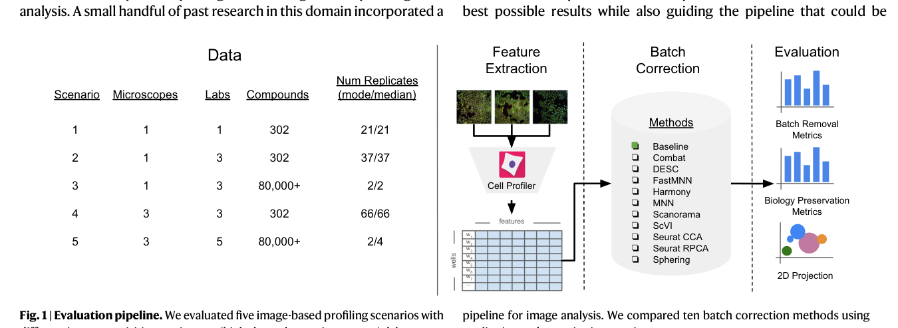
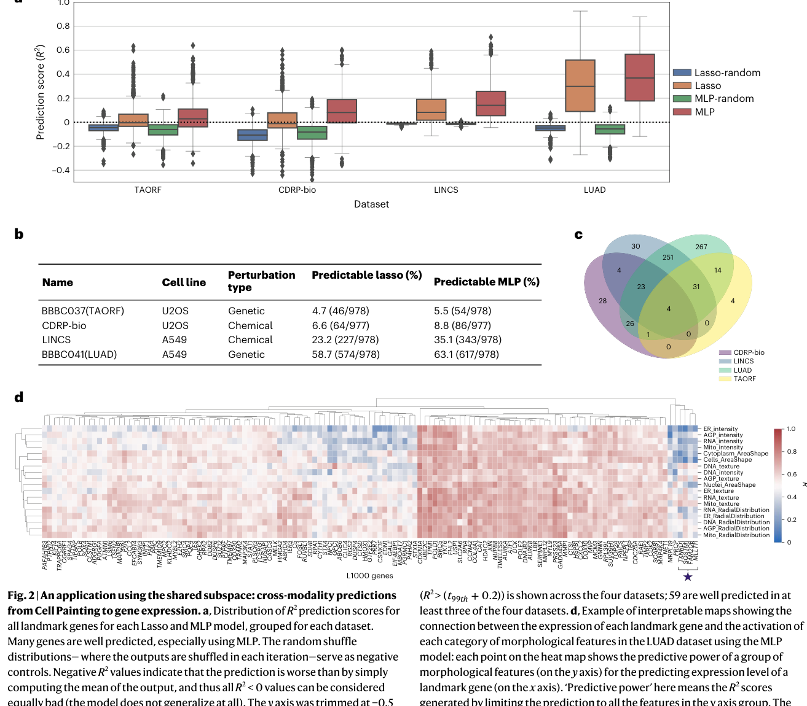
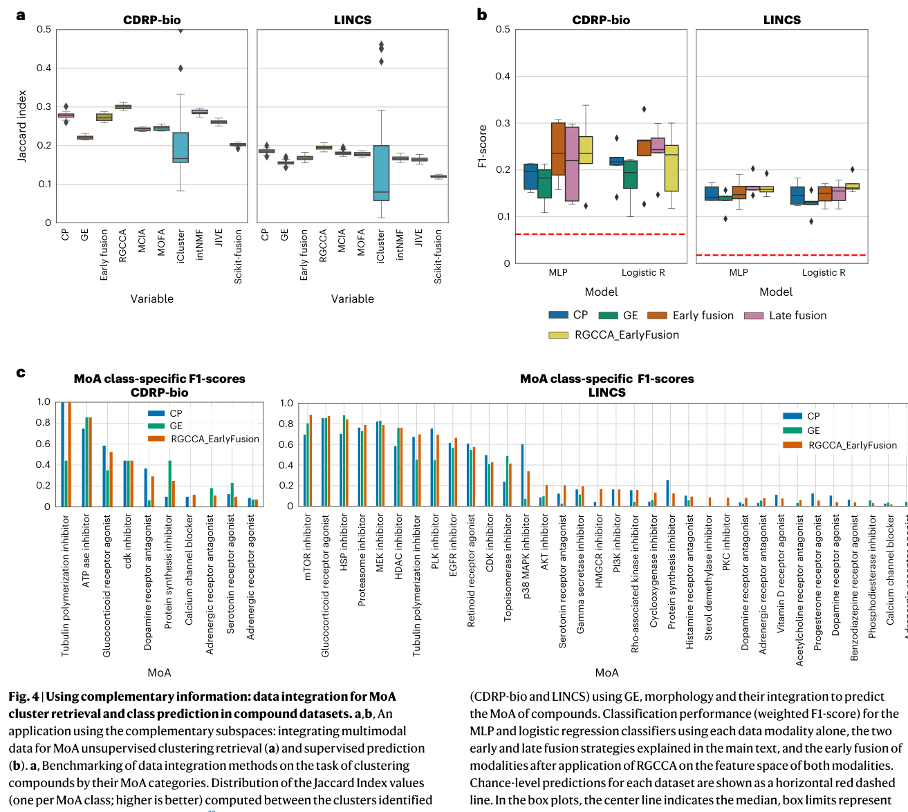
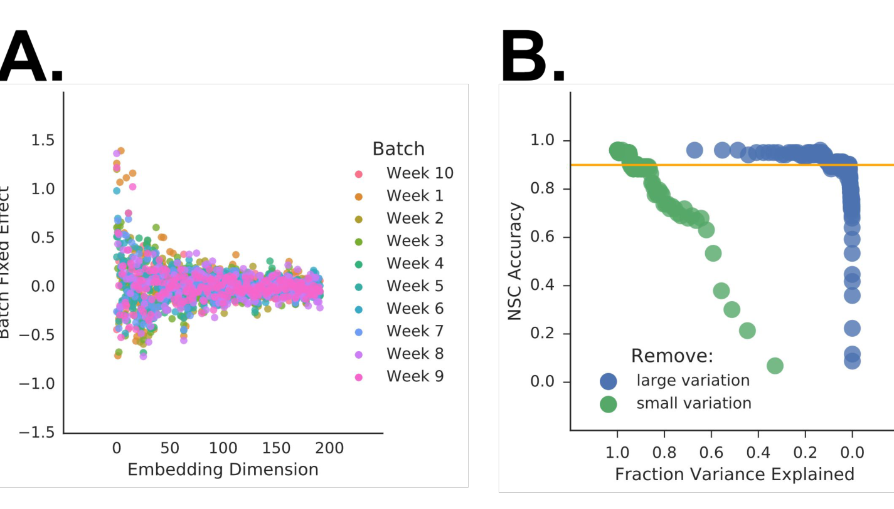
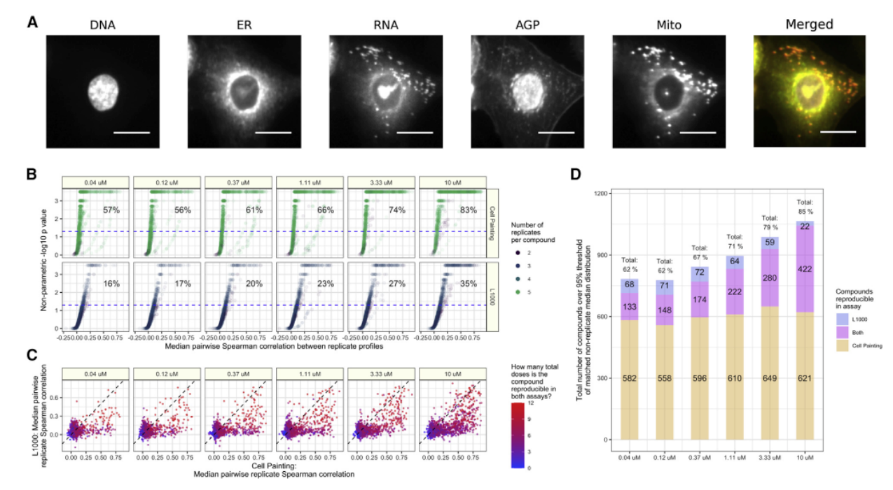

Sau khi tế bào bị quá biểu hiện một gen hoặc xử lý bằng hợp chất hóa học, nhóm đo hồ sơ kiểu hình (ảnh nhuộm huỳnh quang) và mức biểu hiện gen (mRNA). Một phần thay đổi thấy được ở cả hai phép đo (có thể dự đoán chéo); một phần chỉ thấy rõ ở ảnh hoặc chỉ ở mRNA (ví dụ thuốc đổi hình tế bào mà ít đổi phiên mã, hoặc ngược lại — Haghighi; Way). Ba sinh viên cùng quy trình; sau NCKH mỗi người một đồ án.
| Điểm | L1000 | Cell Painting |
|---|---|---|
| Đầu vào | lysate / mẫu phiên mã | tế bào cố định, nhuộm huỳnh quang |
| Đầu ra | ~978 số mức mRNA landmark | hàng trăm–nghìn đặc trưng hình thái |
| Layout Rosetta | Hai bộ đĩa song song · cùng sơ đồ nhiễu loạn · không cùng một giếng | |
| Ký hiệu | Đọc là | Nghĩa ngắn |
|---|---|---|
| CP | Cell Painting | Hồ sơ số rút từ ảnh tế bào đã nhuộm huỳnh quang (hình dạng, cường độ, kết cấu). |
| GE | Gene expression | Mức biểu hiện gen; trong dự án này = vector mức mRNA từ L1000. |
| L1000 | Library of 1000 | Phép đo ~978 gen landmark (bản phiên mã mRNA), không phải toàn bộ transcriptome. |
| landmark | gen điểm mốc | Bộ gen L1000 đo trực tiếp; giữ tên Anh như trong paper. |
| Rosetta | cpg0003-rosetta | Bộ dữ liệu có cả CP và L1000 cùng layout nhiễu loạn (neo nhóm). |
| TA-ORF | tập quá biểu hiện | Tập con Rosetta: tế bào bị quá biểu hiện một gen (ORF). |
| MoA | mechanism of action | Cơ chế tác dụng của hợp chất / thuốc. |
| batch / plate / well | lô / đĩa / giếng | Nguồn nhiễu kỹ thuật (máy, ngày chạy, vị trí giếng) — SV A chỉnh. |
| Ký hiệu | Đọc là | Nghĩa ngắn |
|---|---|---|
| PCA / SVD | thành phần chính / phân rã | Phân tích hướng biến thiên chính của ma trận đặc trưng; bước nền cho whitening. |
| whitening / sphering | làm trắng / “tròn hóa” | Biến đổi hồ sơ theo hiệp phương sai giếng đối chứng để giảm nhiễu kỹ thuật. |
| TVN | Typical Variation Normalization | Quy trình Ando: PCA + chuẩn hóa trục + CORAL theo lô (dạng sphering đầy đủ hơn). |
| CORAL | correlation alignment | Căn chỉnh ma trận tương quan giữa các lô thí nghiệm. |
| Harmony / ComBat | chỉnh batch | Hai phương pháp chỉnh nhiễu lô khác — SV A so sánh với sphering/TVN. |
| Lasso | hồi quy ℓ₁ | Hồi quy tuyến tính có phạt thưa — baseline dự đoán chéo (SV B). |
| MLP | multi-layer perceptron | Mạng nơ-ron nhiều lớp — baseline phi tuyến của paper (SV B). |
| early / late fusion | ghép sớm / muộn | Ghép sớm = nối vector CP+GE; ghép muộn = trung bình xác suất hai bộ phân loại. |
| RGCCA | Regularized GCCA | Phân tích tương quan chính tắc tổng quát hóa có chỉnh hóa — rồi ghép trong không gian chung (SV C). |
| R² · % gen · Jaccard · F1 · mAP | độ đo | R² / % gen = dự đoán chéo; Jaccard / F1 = cơ chế thuốc; mAP / % replicating = chất lượng hồ sơ sau chỉnh nhiễu. |
| SV | Câu hỏi tính toán | Phương pháp | Độ đo |
|---|---|---|---|
| A | Làm sạch nhiễu kỹ thuật trên hồ sơ ảnh | SVD, PCA, sphering, TVN, CORAL; Harmony, ComBat | percent replicating, mAP |
| B | Hai hồ sơ dự đoán chéo được bao nhiêu? | Lasso, MLP | R², % gen dự đoán được |
| C | Ghép hai hồ sơ có đoán cơ chế thuốc tốt hơn? | Early / late fusion, RGCCA, phân loại | Jaccard, F1 |
| Mục đích | Ý nghĩa | Việc làm trên máy | Tiêu chí thành công |
|---|---|---|---|
| Thông tin chung | Phần thay đổi tế bào mà cả ảnh lẫn mRNA đều thể hiện, nên đoán được qua lại giữa hai hồ sơ. | Học hàm: ảnh → mRNA và mRNA → ảnh (Lasso, MLP). | R² đủ tốt so với xáo trộn ngẫu nhiên · báo % gen dự đoán được. |
| Thông tin bổ sung | Phần chỉ rõ ở một phép đo (ví dụ thuốc đổi hình nhưng ít đổi phiên mã), nên cần ghép hai hồ sơ. | Nối / kết hợp CP+GE rồi phân loại cơ chế thuốc. | Jaccard / F1 khi ghép cao hơn (hoặc không kém) so với chỉ dùng một hồ sơ. |
| Giảm nhiễu kỹ thuật | Đĩa/lô/vị trí giếng làm lệch số liệu giả; làm sạch trên hồ sơ ảnh trước khi so sánh. | Sphering, TVN, … trên CP; B và C chạy lại trên bản đã chỉnh. | % replicating / mAP tốt hơn · % gen hoặc MoA đo lại sau chỉnh nhiễu. |
| Ứng dụng | Đầu vào lab | Đầu ra hữu ích | Ai làm |
|---|---|---|---|
| ① Cơ chế thuốc | hồ sơ chất mới + thư viện đã biết | nhóm cơ chế gợi ý | C |
| ② Chức năng gen | quá biểu hiện gen + control | cụm gen cùng kiểu hồ sơ | Rosetta / Rohban |
| ③ Ưu tiên phép đo | ảnh đã chạy · (tuỳ) L1000 | % gen suy được từ ảnh | B (+ A) |

Nguồn: Arevalo et al., Nat Commun 2024, Fig. 1 · DOI 10.1038/s41467-024-50613-5
Giảm khác biệt kỹ thuật (máy, lab, lô) trên hồ sơ đặc trưng; đo loại bỏ batch và bảo toàn tín hiệu sinh học.
Phương pháp: SVD, PCA, whitening / sphering, TVN, CORAL; so sánh Harmony, ComBat.
Độ đo: percent replicating, mAP.

Nguồn: Haghighi et al., Nat Methods 2022, Fig. 2 · DOI 10.1038/s41592-022-01667-0 · TA-ORF ~4,7% / 5,5%
Đo thông tin chung: học hàm dự đoán mức mRNA landmark từ hồ sơ Cell Painting (và chiều ngược).
Phương pháp: Lasso, MLP.
Độ đo: R², % gen dự đoán được (so với xáo trộn ngẫu nhiên).

Nguồn: Haghighi et al., Nat Methods 2022, Fig. 4 · DOI 10.1038/s41592-022-01667-0 · CDRP-bio & LINCS
Đo thông tin bổ sung: ghép hai hồ sơ có giúp đoán cơ chế thuốc tốt hơn từng phép đo đơn không.
Phương pháp: early fusion, late fusion, RGCCA, phân loại.
Độ đo: Jaccard, F1.
Mỗi tập có thư mục CellPainting/ và L1000/. Bộ tầng 2–3 (slide sau) hỗ trợ chỉnh nhiễu / đối chiếu ảnh.
| Mục | Link / lệnh |
|---|---|
| Portal | https://broad.io/rosetta/ |
| DOI paper | 10.1038/s41592-022-01667-0 |
| Code | github.com/carpenter-singh-lab/2022_Haghighi_NatureMethods |
| Gallery ID | cpg0003-rosetta (~8,5 GB số) · mục lục: complete_datasets |
Trong curated: LUAD, LINCS-Pilot1, CDRP, TA-ORF — mỗi tập có thư mục CellPainting/ và L1000/.
| Bộ | Vai trò trong dự án | Link tải |
|---|---|---|
| Arevalo + Zenodo | SV A: benchmark chỉnh batch | GitHub · Zenodo 10.5281/zenodo.11644046 |
| cpg0016-jump | SV A: hồ sơ JUMP (ORF/CRISPR/thuốc ở tầng ảnh) — dùng profile đã xử lý, không tải raw 358 TB | aws s3 ls --no-sign-request s3://cellpainting-gallery/cpg0016-jump/ · gallery |
| cpg0000-jump-pilot (CPJUMP1) | Mở rộng: ORF/CRISPR/thuốc — chỉ Cell Painting | s3://cellpainting-gallery/cpg0000-jump-pilot/ · DOI 10.1038/s41592-024-02241-6 |
| cpg0004-lincs (Way) | Đối chiếu complementary (thuốc); Rosetta đã có LINCS-Pilot1 | s3://cellpainting-gallery/cpg0004-lincs/ · DOI 10.1016/j.cels.2022.10.001 |
| GEO L1000 | Mở rộng RNA ngoài Rosetta (không lõi 4 tháng) | GSE70138 · GSE92742 · clue.io |
data/DATA.md. Bucket chung: cellpainting-gallery.s3.amazonaws.comGồm phần chung (dự đoán chéo) và phần bổ sung (chỉ một phép đo thấy rõ).
Hai vùng ngoài (chỉ CP hoặc chỉ GE): SV C ghép hai hồ sơ cho cơ chế thuốc (Fig. 4).
| Phần | Ý nghĩa | Ví dụ | Ai đo |
|---|---|---|---|
| Chung | cả ảnh và mRNA phản ánh | y ≈ f(X_CP) | B · % gen |
| Bổ sung | chỉ một phép đo thấy rõ | thuốc đổi hình, ít đổi phiên mã | C · Jaccard/F1 |
| SV | Tháng 1–2 (song song) | Sau khi A giao CP₁ |
|---|---|---|
| A | Pipeline chỉnh nhiễu · bảng độ đo · chuẩn bị shared/ v0 |
Benchmark JUMP/Arevalo · so sánh Harmony/ComBat · viết ĐA A · có thể v1 |
| B | Lasso/MLP · % gen trên CP chưa chỉnh (4 tập) | Chạy lại một lần trên CP đã chỉnh |
| C | Early/late/RGCCA · MoA trên hợp chất (CP chưa chỉnh) | Thêm cột Δ trước/sau trên CP₁ |
shared/ profile v0 cuối tháng 2 (không phải hết việc của A)| Phần | Mục chính | ~Tr |
|---|---|---|
| 1 Cơ bản | Nhiễu loạn & profiling; Cell Painting; batch/plate/well; PCA & whitening; JUMP/Rosetta CP | 15–20 |
| 2 Phương pháp | Sphering; TVN 3 bước; Harmony/ComBat; percent replicating / mAP | 20–30 |
| 3 Thực nghiệm | Bảng ≥3 phương pháp × độ đo; ablation; case | ~20 |
| KL | Kết luận | 3–5 |
| Phần | Mục chính | ~Tr |
|---|---|---|
| 1 Cơ bản | L1000 landmark; hồ sơ CP; thông tin chung / bổ sung; TA-ORF yếu đã biết | 15–20 |
| 2 Phương pháp | Khớp ID; Lasso; MLP; xáo trộn null; hai chiều CP ↔ GE | 20–30 |
| 3 Thực nghiệm | TA-ORF vs LUAD/LINCS; ảnh hưởng tiền xử lý từ A | ~20 |
| KL | Kết luận | 3–5 |
| Phần | Mục chính | ~Tr |
|---|---|---|
| 1 Cơ bản | Thông tin bổ sung & ghép; cơ chế thuốc từ hồ sơ; vai A/B | 15–20 |
| 2 Phương pháp | Jaccard; ghép sớm/muộn/RGCCA; quy trình A→B; mô phỏng *mở rộng* | 20–30 |
| 3 Thực nghiệm | Ghép vs một hồ sơ; bảng trước/sau chỉnh nhiễu | ~20 |
| KL | Kết luận | 3–5 |

Nguồn (crop khung hình): Ando et al., bioRxiv 2017, Fig. 3 · DOI 10.1101/161422 · PDF trang 19.

Nguồn: Way et al., Cell Systems 2022, Fig. 1 · DOI 10.1016/j.cels.2022.10.001 · ngữ cảnh hợp chất
| File giao | Nội dung | Ai đọc |
|---|---|---|
shared/cp_profiles_v0.parquet | CP₀ + CP₁ + ID nhiễu loạn | B, C |
shared/percent_predictable.csv | % gen · 4 tập · 2 phiên bản CP | C, slides |
shared/moa_scores.csv | Jaccard / F1 · trước/sau | slides NCKH |
| Giai đoạn | Thời gian | Sản phẩm |
|---|---|---|
| NCKH | 4 tháng | data · quy trình · slides nhóm · 3 bảng số (A/B/C) |
| Khóa ĐA | 1 tháng | đủ Phần 1–2–3 từng SV |
| Thủ tục | 1 tháng | BV · clone sạch chạy lại |
| Nhu cầu | File |
|---|---|
| Bài toán & phạm vi | OUTLINE.md |
| Chi tiết từng SV / mục lục trang | SPLIT_PLAN.md |
| Link + lệnh data | data/DATA.md |
| Todos (PDF, Fig, công thức) | work/role-a|b|c/TODOS.md |
| PDF chụp + cite | literature/papers/ |
| QC slides | slides/nckh-briefing/QC_REPORT.md |
| Trọng tâm | Ngoài trọng tâm NCKH |
|---|---|
| thông tin chung / bổ sung · chỉnh nhiễu kỹ thuật | mô hình nhân quả Gene→RNA→kiểu hình làm trụ |
| # | Paper | Đọc để biết | Ai ưu tiên |
|---|---|---|---|
| 1–2 | Bray · Subramanian | phép đo CP / L1000 | cả nhóm |
| 3 | Haghighi 2022 | Rosetta · Fig. 2–4 | cả nhóm |
| 4 | Rohban 2017 | TA-ORF + CP | B |
| 5–6 | Way · Ando · Arevalo | bổ sung / TVN / batch | A, C |
| * | CPJUMP1 | CRISPR/ORF tầng ảnh | mở rộng |
SPLIT_PLAN.md; tạo repo GITHUB.md.data/inventory.md.work/role-*/TODOS.md.| Họp | Giao NCKH | Todos |
|---|---|---|
| 20:30 tối thứ Năm | 22/03/2027 · 3 bảng số | work/role-a|b|c/TODOS.md |
work/role-a|b|c/TODOS.md · họp 20:30 tối thứ Năm.